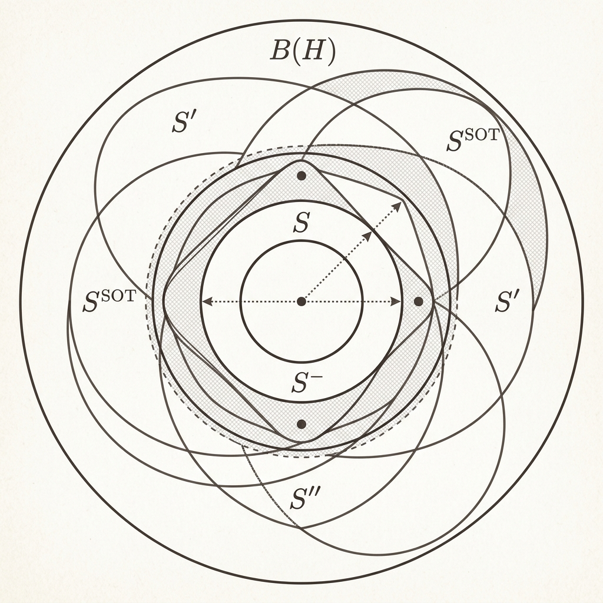

von Neumann Double Commutant Theorem

Mathematical Exposition
The von Neumann Double Commutant Theorem is a cornerstone result in operator algebras and functional analysis, proved by John von Neumann in 1929. It establishes a deep link between the algebraic concept of a commutant and the topological closures of a star-subalgebra of bounded operators acting on a Hilbert space $H$.
Mathematical Context
Let $\mathcal{B}(H)$ be the algebra of bounded linear operators on a complex Hilbert space $H$. For any subset $S \subseteq \mathcal{B}(H)$, the commutant of $S$, denoted $S'$, is the set of all operators that commute with everything in $S$:
$$S' = \{ T \in \mathcal{B}(H) \mid TS = ST \text{ for all } S \in S \}$$The double commutant $S'' = (S')'$ is the commutant of $S'$. We define three major topologies on $\mathcal{B}(H)$:
- Norm Topology: Defined by the operator norm $\|T\|$.
- Strong Operator Topology (SOT): Defined by pointwise convergence, i.e., $T_i \to T$ strongly if $\|T_i x - T x\| \to 0$ for all $x \in H$.
- Weak Operator Topology (WOT): Defined by weak pointwise convergence, i.e., $T_i \to T$ weakly if $\langle T_i x, y \rangle \to \langle T x, y \rangle$ for all $x, y \in H$.
The Theorem
Let $S$ be a unital star-subalgebra of $\mathcal{B}(H)$ (meaning it is closed under taking adjoints and contains the identity operator $I$). The following are equivalent:
- $S = S''$ (algebraic characterization: $S$ equals its double commutant).
- $S$ is closed in the Strong Operator Topology (SOT).
- $S$ is closed in the Weak Operator Topology (WOT).
A star-subalgebra satisfying these equivalent conditions is called a von Neumann algebra (or a $W^*$-algebra).
Lean 4 Formalization
Our Lean 4 proof formalizes the equivalence of the three conditions (`vonNeumann_doubleCommutant_tfae`). The proof establishes the chain of implications: WOT-closed implies SOT-closed because the WOT topology is coarser than the SOT topology. SOT-closed implies $S'' = S$ by using a classic approximation argument: for any operator $T \in S''$ and any finite set of vectors $x_1, \dots, x_n \in H$, we construct a projection onto the closure of the subspace generated by the action of $S$ on the direct sum of $H$, showing that we can approximate $T$ on these vectors by an element of $S$. Finally, we show that $S'' = S$ implies WOT-closed because the commutant is defined by commutativity relations, which are closed in the WOT topology.
import Mathlib
namespace Submission
open ContinuousLinearMap Topology
noncomputable def sotToWot {H : Type*} [NormedAddCommGroup H] [InnerProductSpace ℂ H] [CompleteSpace H] :
(H →Lₚₜ[ℂ] H) ≃ₗ[ℂ] (H →WOT[ℂ] H) :=
((toUniformConvergenceCLM (RingHom.id ℂ) H {s | Finite s}).symm).trans
(toWOT (RingHom.id ℂ) H H)
theorem continuous_sotToWot {H : Type*} [NormedAddCommGroup H] [InnerProductSpace ℂ H] [CompleteSpace H] :
Continuous (sotToWot (H := H)) := by
apply ContinuousLinearMapWOT.continuous_of_dual_apply_continuous
intro x y
have h : (fun a : H →Lₚₜ[ℂ] H => y (sotToWot a x)) = (fun a => y (a x)) := by
ext a
rfl
rw [h]
exact y.continuous.comp (continuous_eval_const x)
theorem sot_closed_of_wot_closed {H : Type*} [NormedAddCommGroup H] [InnerProductSpace ℂ H] [CompleteSpace H]
(S : StarSubalgebra ℂ (H →L[ℂ] H))
(hWOT : IsClosed (toWOT (RingHom.id ℂ) H H '' (S : Set (H →L[ℂ] H)))) :
IsClosed (toPointwiseConvergenceCLM ℂ (RingHom.id ℂ) H H '' (S : Set (H →L[ℂ] H))) := by
have h_eq : toPointwiseConvergenceCLM ℂ (RingHom.id ℂ) H H '' (S : Set (H →L[ℂ] H)) =
sotToWot ⁻¹' (toWOT (RingHom.id ℂ) H H '' (S : Set (H →L[ℂ] H))) := by
ext A
simp only [Set.mem_image, Set.mem_preimage]
constructor
· rintro ⟨T, hT, rfl⟩
exact ⟨T, hT, rfl⟩
· rintro ⟨T, hT, hT2⟩
refine ⟨T, hT, ?_⟩
exact sotToWot.injective hT2
rw [h_eq]
exact IsClosed.preimage continuous_sotToWot hWOT
theorem isClosed_wot_centralizer {H : Type*} [NormedAddCommGroup H] [InnerProductSpace ℂ H] [CompleteSpace H]
(T : Set (H →L[ℂ] H)) :
IsClosed (toWOT (RingHom.id ℂ) H H '' Set.centralizer T) := by
have h_eq : toWOT (RingHom.id ℂ) H H '' Set.centralizer T =
⋂ A ∈ T, ⋂ (x : H), ⋂ (y : StrongDual ℂ H),
{ B' | y (B' (A x)) = (y.comp A) (B' x) } := by
ext B'
simp only [Set.mem_image, Set.mem_centralizer_iff, Set.mem_iInter, Set.mem_setOf_eq]
constructor
· rintro ⟨B, hB, rfl⟩ A hA x y
have h1 := congr_arg (fun (f : H →L[ℂ] H) => f x) (hB A hA)
simp only [mul_apply] at h1
simp only [toWOT_apply, comp_apply]
rw [h1]
· intro hB'
refine ⟨(toWOT (RingHom.id ℂ) H H).symm B', ?_, by simp⟩
intro A hA
ext x
simp only [mul_apply]
change A (B' x) = B' (A x)
rw [SeparatingDual.eq_iff_forall_dual_eq (R := ℂ)]
intro y
have h_spec := hB' A hA x y
simp only [comp_apply] at h_spec
exact h_spec.symm
rw [h_eq]
refine isClosed_biInter fun A _ => isClosed_iInter fun x => isClosed_iInter fun y => ?_
exact isClosed_eq (ContinuousLinearMapWOT.continuous_dual_apply (A x) y) (ContinuousLinearMapWOT.continuous_dual_apply x (y.comp A))
theorem wot_closed_of_double_commutant_eq {H : Type*} [NormedAddCommGroup H] [InnerProductSpace ℂ H] [CompleteSpace H]
(S : StarSubalgebra ℂ (H →L[ℂ] H))
(hS : Set.centralizer (Set.centralizer (S : Set (H →L[ℂ] H))) = S) :
IsClosed (toWOT (RingHom.id ℂ) H H '' (S : Set (H →L[ℂ] H))) := by
have hS' : (S : Set (H →L[ℂ] H)) = Set.centralizer (Set.centralizer (S : Set (H →L[ℂ] H))) := hS.symm
rw [hS']
exact isClosed_wot_centralizer (Set.centralizer (S : Set (H →L[ℂ] H)))
lemma exists_pos_forall_le_of_finite {α : Type*} {s : Set α} (hs : s.Finite) {f : α → ℝ} (hf : ∀ x ∈ s, 0 < f x) :
∃ ε > 0, ∀ x ∈ s, ε ≤ f x := by
revert hf
refine Set.Finite.induction_on s hs ?_ ?_
· intro _
exact ⟨1, by norm_num, fun x hx => False.elim hx⟩
· intro a s' ha hs' ih hf_ins
have hf_s : ∀ x ∈ s', 0 < f x := fun x hx => hf_ins x (Set.mem_insert_of_mem _ hx)
rcases ih hf_s with ⟨ε, hε, h_le⟩
have ha_pos : 0 < f a := hf_ins a (Set.mem_insert _ _)
refine ⟨min ε (f a), lt_min hε ha_pos, ?_⟩
intro x hx
simp only [Set.mem_insert_iff] at hx
rcases hx with rfl | hx
· exact min_le_right _ _
· exact (min_le_left _ _).trans (h_le x hx)
theorem mem_closure_pi_iff {ι : Type*} {α : ι → Type*} [∀ i, MetricSpace (α i)]
{S : Set (∀ i, α i)} {f : ∀ i, α i} :
f ∈ closure S ↔ ∀ (I : Finset ι) (ε : ℝ) (_ : 0 < ε), ∃ g ∈ S, ∀ i ∈ I, dist (g i) (f i) < ε := by
have h_basis : (𝓝 f).HasBasis
(fun If : Set ι × (ι → ℝ) => If.1.Finite ∧ ∀ i ∈ If.1, 0 < If.2 i)
(fun If => If.1.pi (fun i => Metric.ball (f i) (If.2 i))) := by
rw [nhds_pi]
exact Filter.hasBasis_pi (fun i => Metric.nhds_basis_ball)
rw [mem_closure_iff_nhds_basis h_basis]
constructor
· intro h I ε hε
have h_mem := h ⟨I, fun _ => ε⟩ ⟨I.finite_toSet, fun _ _ => hε⟩
rcases h_mem with ⟨g, hg_S, hg_ball⟩
refine ⟨g, hg_S, ?_⟩
intro i hi
have hg_i := hg_ball i hi
exact Metric.mem_ball.mp hg_i
· intro h If hIf
rcases hIf with ⟨hIf1, hIf2⟩
rcases exists_pos_forall_le_of_finite hIf1 hIf2 with ⟨ε, hε, h_le⟩
have h_mem := h hIf1.toFinset ε hε
rcases h_mem with ⟨g, hg_S, hg_ball⟩
refine ⟨g, hg_S, ?_⟩
intro i hi
have hi_fin : i ∈ hIf1.toFinset := by rwa [Set.Finite.mem_toFinset]
have hg_i := hg_ball i hi_fin
refine Metric.mem_ball.mpr ?_
exact hg_i.trans_le (h_le i hi)
def B_amp {H : Type*} [NormedAddCommGroup H] [InnerProductSpace ℂ H]
(ι : Type*) [Fintype ι] (B : H →L[ℂ] H) :
PiLp 2 (fun _ : ι => H) →L[ℂ] PiLp 2 (fun _ : ι => H) :=
(PiLp.continuousLinearEquiv 2 ℂ (fun _ : ι => H)).symm ∘L
(ContinuousLinearMap.piMap (fun _ : ι => B)) ∘L
(PiLp.continuousLinearEquiv 2 ℂ (fun _ : ι => H))
lemma B_amp_apply {H : Type*} [NormedAddCommGroup H] [InnerProductSpace ℂ H]
(ι : Type*) [Fintype ι] (B : H →L[ℂ] H) (x : PiLp 2 (fun _ : ι => H)) (i : ι) :
(B_amp ι B x) i = B (x i) := by
rfl
lemma B_amp_adjoint {H : Type*} [NormedAddCommGroup H] [InnerProductSpace ℂ H] [CompleteSpace H]
(ι : Type*) [Fintype ι] (B : H →L[ℂ] H) :
ContinuousLinearMap.adjoint (B_amp ι B) = B_amp ι (ContinuousLinearMap.adjoint B) := by
rw [eq_comm, ContinuousLinearMap.eq_adjoint_iff]
intro x y
rw [PiLp.inner_apply, PiLp.inner_apply]
simp_rw [B_amp_apply]
refine Finset.sum_congr rfl (fun i _ => ?_)
exact ContinuousLinearMap.adjoint_inner_left B (y i) (x i)
lemma proj_comp_piMap {H : Type*} [NormedAddCommGroup H] [InnerProductSpace ℂ H]
(ι : Type*) [Fintype ι] [DecidableEq ι] (B : H →L[ℂ] H) (i : ι) :
ContinuousLinearMap.proj i ∘L ContinuousLinearMap.piMap (fun _ : ι => B) =
B ∘L ContinuousLinearMap.proj i := by
ext x
rfl
lemma piMap_comp_single {H : Type*} [NormedAddCommGroup H] [InnerProductSpace ℂ H]
(ι : Type*) [Fintype ι] [DecidableEq ι] (B : H →L[ℂ] H) (j : ι) :
ContinuousLinearMap.piMap (fun _ : ι => B) ∘L ContinuousLinearMap.single ℂ (fun _ : ι => H) j =
ContinuousLinearMap.single ℂ (fun _ : ι => H) j ∘L B := by
ext x k
dsimp [ContinuousLinearMap.single, ContinuousLinearMap.piMap]
simp only [Pi.single_apply]
split_ifs with h
· subst h; rfl
· exact map_zero B
lemma clm_ext_matrix {H : Type*} [NormedAddCommGroup H] [InnerProductSpace ℂ H]
(ι : Type*) [Fintype ι] [DecidableEq ι]
(U V : PiLp 2 (fun _ : ι => H) →L[ℂ] PiLp 2 (fun _ : ι => H))
(h : ∀ (i j : ι), (ContinuousLinearMap.proj i ∘L (PiLp.continuousLinearEquiv 2 ℂ (fun _ : ι => H) : PiLp 2 (fun _ : ι => H) →L[ℂ] ι → H)) ∘L U ∘L
(((PiLp.continuousLinearEquiv 2 ℂ (fun _ : ι => H)).symm : (ι → H) →L[ℂ] PiLp 2 (fun _ : ι => H)) ∘L ContinuousLinearMap.single ℂ (fun _ : ι => H) j) =
(ContinuousLinearMap.proj i ∘L (PiLp.continuousLinearEquiv 2 ℂ (fun _ : ι => H) : PiLp 2 (fun _ : ι => H) →L[ℂ] ι → H)) ∘L V ∘L
(((PiLp.continuousLinearEquiv 2 ℂ (fun _ : ι => H)).symm : (ι → H) →L[ℂ] PiLp 2 (fun _ : ι => H)) ∘L ContinuousLinearMap.single ℂ (fun _ : ι => H) j)) :
U = V := by
ext x i
let equiv := (PiLp.continuousLinearEquiv 2 ℂ (fun _ : ι => H) : PiLp 2 (fun _ : ι => H) →L[ℂ] ι → H)
let equiv_symm := ((PiLp.continuousLinearEquiv 2 ℂ (fun _ : ι => H)).symm : (ι → H) →L[ℂ] PiLp 2 (fun _ : ι => H))
let f := (PiLp.continuousLinearEquiv 2 ℂ (fun _ : ι => H)) x
have hx : x = equiv_symm f := by
change x = (PiLp.continuousLinearEquiv 2 ℂ (fun _ : ι => H)).symm ((PiLp.continuousLinearEquiv 2 ℂ (fun _ : ι => H)) x)
exact (ContinuousLinearEquiv.symm_apply_apply _ _).symm
have h_eq : (U x) i = (equiv (U x)) i := rfl
have h_eq2 : (V x) i = (equiv (V x)) i := rfl
rw [h_eq, h_eq2]
rw [hx]
let LU := equiv ∘L U ∘L equiv_symm
let LV := equiv ∘L V ∘L equiv_symm
have h_LU : equiv (U (equiv_symm f)) = LU f := rfl
have h_LV : equiv (V (equiv_symm f)) = LV f := rfl
change (equiv (U (equiv_symm f))) i = (equiv (V (equiv_symm f))) i
rw [h_LU, h_LV]
have h_sum_U := (ContinuousLinearMap.sum_comp_single ℂ (fun _ : ι => H) LU f).symm
have h_sum_V := (ContinuousLinearMap.sum_comp_single ℂ (fun _ : ι => H) LV f).symm
rw [h_sum_U, h_sum_V]
simp only [Finset.sum_apply]
refine Finset.sum_congr rfl (fun j _ => ?_)
have h_ij := congr_arg (fun (T : H →L[ℂ] H) => T (f j)) (h i j)
exact h_ij
lemma B_amp_commute {H : Type*} [NormedAddCommGroup H] [InnerProductSpace ℂ H] [CompleteSpace H]
(ι : Type*) [Fintype ι] [DecidableEq ι] (S : StarSubalgebra ℂ (H →L[ℂ] H)) (T : H →L[ℂ] H)
(hT : T ∈ Set.centralizer (Set.centralizer (S : Set (H →L[ℂ] H))))
(Q : PiLp 2 (fun _ : ι => H) →L[ℂ] PiLp 2 (fun _ : ι => H))
(hQ : ∀ B ∈ S, Q ∘L B_amp ι B = B_amp ι B ∘L Q) :
Q ∘L B_amp ι T = B_amp ι T ∘L Q := by
apply clm_ext_matrix ι (Q ∘L B_amp ι T) (B_amp ι T ∘L Q)
intro i j
let equiv := (PiLp.continuousLinearEquiv 2 ℂ (fun _ : ι => H) : PiLp 2 (fun _ : ι => H) →L[ℂ] ι → H)
let equiv_symm := ((PiLp.continuousLinearEquiv 2 ℂ (fun _ : ι => H)).symm : (ι → H) →L[ℂ] PiLp 2 (fun _ : ι => H))
let proj_i := ContinuousLinearMap.proj i ∘L equiv
let single_j := equiv_symm ∘L ContinuousLinearMap.single ℂ (fun _ : ι => H) j
let Q_ij := proj_i ∘L Q ∘L single_j
have h_single : ∀ B ∈ S, single_j ∘L B = B_amp ι B ∘L single_j := by
intro B _
ext x k
dsimp [single_j, B_amp, equiv, equiv_symm]
simp only [Pi.single_apply]
split_ifs with h
· subst h; rfl
· exact (map_zero B).symm
have h_comm : ∀ B ∈ S, Q_ij ∘L B = B ∘L Q_ij := by
intro B hB
ext x
have h_s := congr_arg (fun f => f x) (h_single B hB)
dsimp [single_j, B_amp, equiv, equiv_symm] at h_s
have h_Q_comm := congr_arg (fun f => f (WithLp.toLp 2 (Pi.single j x))) (hQ B hB)
dsimp [B_amp, equiv, equiv_symm] at h_Q_comm
dsimp [Q_ij, proj_i, single_j, B_amp, equiv, equiv_symm]
rw [h_s, h_Q_comm]
rfl
have h_T_comm : Q_ij ∘L T = T ∘L Q_ij := by
have h_mem : Q_ij ∈ Set.centralizer (S : Set (H →L[ℂ] H)) := by
intro B hB
exact (h_comm B hB).symm
exact hT Q_ij h_mem
have h_single_T : single_j ∘L T = B_amp ι T ∘L single_j := by
ext x k
dsimp [single_j, B_amp, equiv, equiv_symm]
simp only [Pi.single_apply]
split_ifs with h
· subst h; rfl
· exact (map_zero T).symm
have h_LHS : (proj_i ∘L (Q ∘L B_amp ι T) ∘L single_j) = Q_ij ∘L T := by
ext x
have h_s := congr_arg (fun f => f x) h_single_T
dsimp [single_j, B_amp, equiv, equiv_symm] at h_s
dsimp [Q_ij, proj_i, single_j, B_amp, equiv, equiv_symm]
rw [← h_s]
have h_RHS : (proj_i ∘L (B_amp ι T ∘L Q) ∘L single_j) = T ∘L Q_ij := by
ext x
rfl
ext x
rw [congr_arg (fun f => f x) h_LHS, congr_arg (fun f => f x) h_RHS, congr_arg (fun f => f x) h_T_comm]
theorem double_commutant_eq_of_sot_closed {H : Type*} [NormedAddCommGroup H] [InnerProductSpace ℂ H] [CompleteSpace H]
(S : StarSubalgebra ℂ (H →L[ℂ] H))
(hSOT : IsClosed (toPointwiseConvergenceCLM ℂ (RingHom.id ℂ) H H '' (S : Set (H →L[ℂ] H)))) :
Set.centralizer (Set.centralizer (S : Set (H →L[ℂ] H))) = S := by
have h_sub : (S : Set (H →L[ℂ] H)) ⊆ Set.centralizer (Set.centralizer (S : Set (H →L[ℂ] H))) :=
Set.subset_centralizer_centralizer
refine Set.Subset.antisymm ?_ h_sub
intro T hT
have h_closed : toPointwiseConvergenceCLM ℂ (RingHom.id ℂ) H H '' (S : Set (H →L[ℂ] H)) =
closure (toPointwiseConvergenceCLM ℂ (RingHom.id ℂ) H H '' (S : Set (H →L[ℂ] H))) :=
hSOT.closure_eq.symm
have h_in : toPointwiseConvergenceCLM ℂ (RingHom.id ℂ) H H T ∈ toPointwiseConvergenceCLM ℂ (RingHom.id ℂ) H H '' (S : Set (H →L[ℂ] H)) := by
rw [h_closed]
have h_emb := PointwiseConvergenceCLM.isEmbedding_coeFn (RingHom.id ℂ) H H
have h_ind := h_emb.isInducing
rw [h_ind.closure_eq_preimage_closure_image]
simp only [Set.mem_preimage, Set.image_image]
rw [mem_closure_pi_iff]
simp only [Set.mem_image, exists_exists_and_eq_and, dist_eq_norm]
change ∀ (I : Finset H) (ε : ℝ), 0 < ε → ∃ a ∈ S, ∀ i ∈ I, ‖a i - T i‖ < ε
intro I ε hε
let ι := I
haveI : Fintype ι := inferInstance
haveI : DecidableEq ι := Classical.decEq ι
let x : PiLp 2 (fun _ : ι ↦ H) := WithLp.toLp 2 (fun i ↦ i.val)
let W : Submodule ℂ (PiLp 2 (fun _ : ι ↦ H)) := {
carrier := { y | ∃ B ∈ S, y = B_amp ι B x }
zero_mem' := ⟨0, S.zero_mem, by
ext i
rw [B_amp_apply, ContinuousLinearMap.zero_apply]
rfl
⟩
add_mem' := by
rintro _ _ ⟨B1, hB1, rfl⟩ ⟨B2, hB2, rfl⟩
refine ⟨B1 + B2, S.add_mem hB1 hB2, ?_⟩
ext
rfl
smul_mem' := by
rintro c _ ⟨B, hB, rfl⟩
refine ⟨c • B, S.smul_mem hB c, ?_⟩
ext
rfl
}
let M := W.topologicalClosure
let P := Submodule.starProjection M
have h_inv0 : ∀ B ∈ S, Submodule.map (B_amp ι B).toLinearMap W ≤ W := by
intro B hB y hy
rcases hy with ⟨z, ⟨A, hA, rfl⟩, rfl⟩
refine ⟨B * A, S.mul_mem hB hA, ?_⟩
ext i
change (B_amp ι B (B_amp ι A x)) i = (B * A) (x i)
rw [B_amp_apply, B_amp_apply]
rfl
have h_inv : ∀ B ∈ S, Submodule.map (B_amp ι B).toLinearMap M ≤ M := by
intro B hB
refine (Submodule.topologicalClosure_map (B_amp ι B) W).trans ?_
exact Submodule.topologicalClosure_mono (h_inv0 B hB)
have h_adj' : ∀ (B : H →L[ℂ] H) (u v : PiLp 2 (fun _ : ι ↦ H)), inner ℂ u (B_amp ι B v) = inner ℂ (B_amp ι (star B) u) v := by
intro B u v
simp only [PiLp.inner_apply]
congr 1
ext i
rw [B_amp_apply, B_amp_apply]
rw [← adjoint_inner_left]
rfl
have hP_comm : ∀ B ∈ S, P ∘L B_amp ι B = B_amp ι B ∘L P := by
intro B hB
refine ContinuousLinearMap.ext (fun y ↦ ?_)
have hPy_mem : P y ∈ M := Submodule.starProjection_apply_mem M y
have h_orth : y - P y ∈ Mᗮ := Submodule.sub_starProjection_mem_orthogonal y
have h_decomp : y = P y + (y - P y) := by simp
have h1 : B_amp ι B (P y) ∈ M := h_inv B hB (Submodule.mem_map_of_mem hPy_mem)
have h2 : B_amp ι B (y - P y) ∈ Mᗮ := by
intro w hw
have h_adj_B := h_adj' B w (y - P y)
rw [h_adj_B]
have h_starB : star B ∈ S := star_mem hB
have h_mem2 : B_amp ι (star B) w ∈ M := h_inv (star B) h_starB (Submodule.mem_map_of_mem hw)
exact Submodule.inner_right_of_mem_orthogonal h_mem2 h_orth
have hP_zero : P (B_amp ι B (y - P y)) = 0 := by
have h_ker := Submodule.ker_starProjection M
change P.toLinearMap (B_amp ι B (y - P y)) = 0
rw [← LinearMap.mem_ker, h_ker]
exact h2
calc P (B_amp ι B y) = P (B_amp ι B (P y + (y - P y))) := by rw [← h_decomp]
_ = P (B_amp ι B (P y) + B_amp ι B (y - P y)) := by simp only [map_add]
_ = P (B_amp ι B (P y)) + P (B_amp ι B (y - P y)) := by simp only [map_add]
_ = B_amp ι B (P y) + 0 := by rw [Submodule.starProjection_eq_self_iff.mpr h1, hP_zero]
_ = B_amp ι B (P y) := by simp only [add_zero]
have hP_T_comm : P ∘L B_amp ι T = B_amp ι T ∘L P := B_amp_commute ι S T hT P hP_comm
have hx_W : x ∈ W := by
refine ⟨1, S.one_mem, ?_⟩
ext i
rw [B_amp_apply]
simp only [ContinuousLinearMap.one_apply]
have hx_M : x ∈ M := Submodule.le_topologicalClosure W hx_W
have h_Tx_M : B_amp ι T x ∈ M := by
rw [← Submodule.starProjection_eq_self_iff]
have h_comm_x : P (B_amp ι T x) = B_amp ι T (P x) := congr_arg (fun f ↦ f x) hP_T_comm
rw [h_comm_x]
rw [Submodule.starProjection_eq_self_iff.mpr hx_M]
have h_in_closure : B_amp ι T x ∈ closure (W : Set (PiLp 2 (fun _ ↦ H))) := by
rw [← W.topologicalClosure_coe]
exact h_Tx_M
rcases Metric.mem_closure_iff.mp h_in_closure ε hε with ⟨y, hy_W, hy_dist⟩
rcases hy_W with ⟨a, ha, rfl⟩
refine ⟨a, ha, ?_⟩
intro i hi
let i_sub : ι := ⟨i, hi⟩
have h_le := PiLp.norm_apply_le (B_amp ι a x - B_amp ι T x) i_sub
have h_lt : ‖(B_amp ι a x - B_amp ι T x) i_sub‖ < ε := by
rw [dist_comm] at hy_dist
rw [dist_eq_norm] at hy_dist
exact h_le.trans_lt hy_dist
have h_eval : (B_amp ι a x - B_amp ι T x) i_sub = a i - T i := by
dsimp [B_amp, PiLp.continuousLinearEquiv]
rfl
rwa [h_eval] at h_lt
rcases h_in with ⟨T', hT', hT'2⟩
have h_eq : T = T' := by
ext x
have h_eval := congr_arg (fun f => (f : H →Lₚₜ[ℂ] H) x) hT'2.symm
exact h_eval
rwa [h_eq]
theorem vonNeumann_doubleCommutant_tfae {H : Type*} [NormedAddCommGroup H] [InnerProductSpace ℂ H] [CompleteSpace H]
(S : StarSubalgebra ℂ (H →L[ℂ] H)) :
List.TFAE
[ Set.centralizer (Set.centralizer (S : Set (H →L[ℂ] H))) = S
, IsClosed
(ContinuousLinearMap.toWOT (RingHom.id ℂ) H H '' (S : Set (H →L[ℂ] H)))
, IsClosed
(ContinuousLinearMap.toPointwiseConvergenceCLM ℂ (RingHom.id ℂ) H H ''
(S : Set (H →L[ℂ] H))) ] := by
tfae_have 1 → 2 := wot_closed_of_double_commutant_eq S
tfae_have 2 → 3 := sot_closed_of_wot_closed S
tfae_have 3 → 1 := double_commutant_eq_of_sot_closed S
tfae_finish
end Submission